Stories About Teenage Rockstar Bedrooms
Stories About Teenage Rockstar Bedrooms imagines a parallel adolescence for iconic music figures from the 1990s and 2000s. Rendered through AI in 2023, the series reinterprets these personalities as exaggerated teenagers, staged inside fictional bedrooms shaped by obsession, fandom, taste and identity.
Rather than treating the images as straightforward likenesses, the project uses the bedroom as a narrative device. Posters, toys, media objects, furniture, colors and scattered clutter work together as psychological clues, constructing each scene as a pop-cultural portrait.
Visually, the series embraces a grotesque caricature style: oversized features, heightened expressions and an artificial, toy-like atmosphere. Somewhere between parody, tribute and character design, the project explores how celebrity myth can be translated into intimate teenage space.
2023
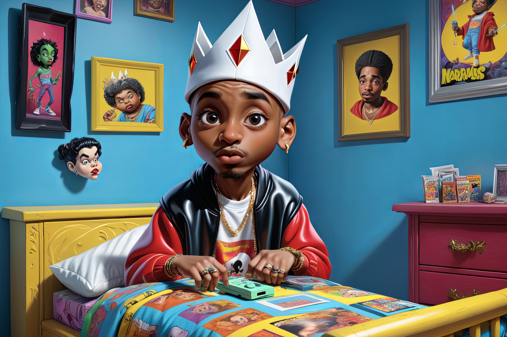
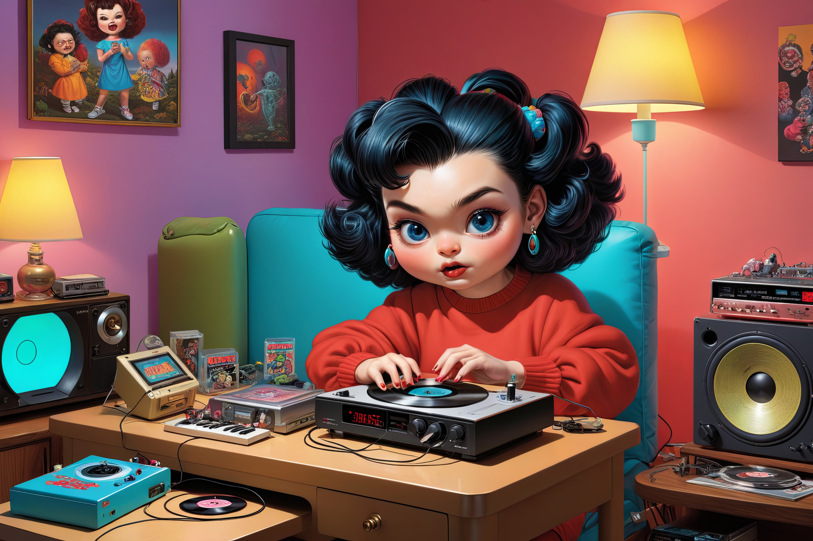
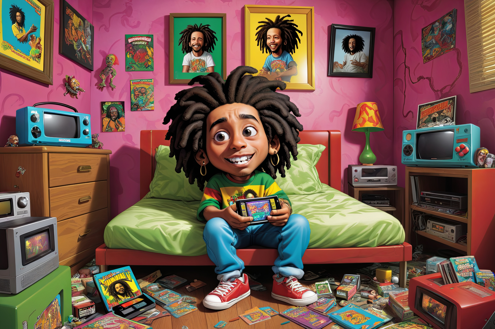
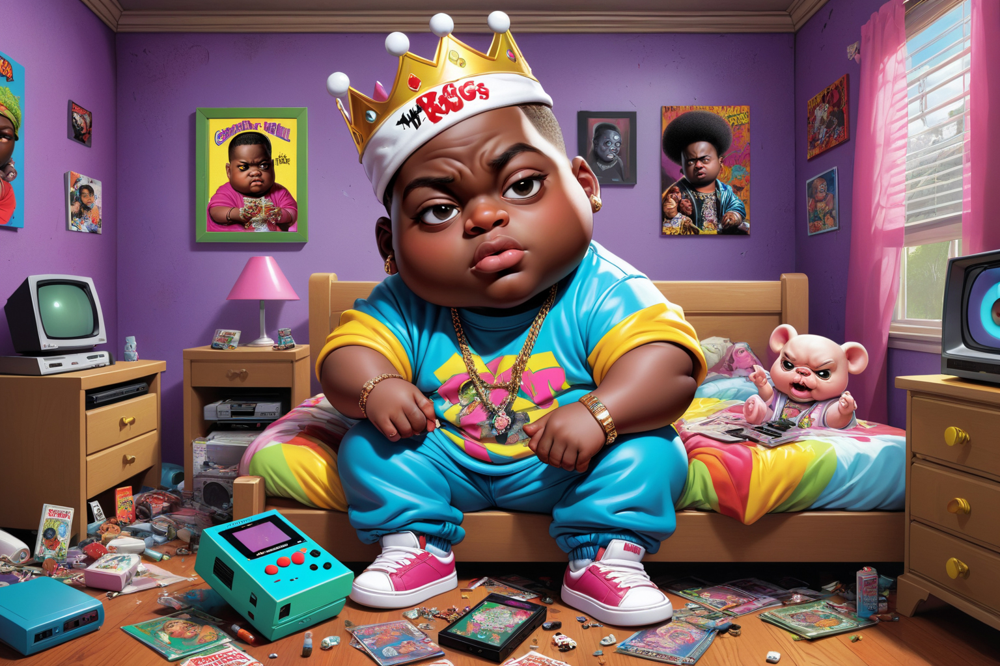
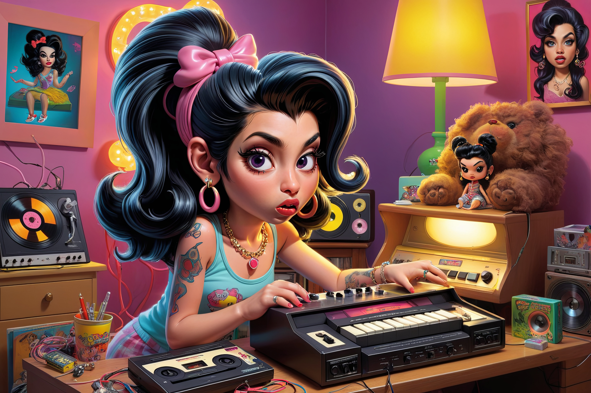
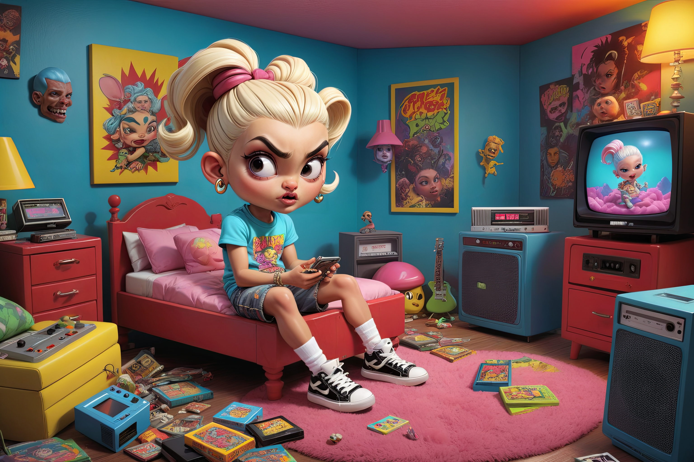
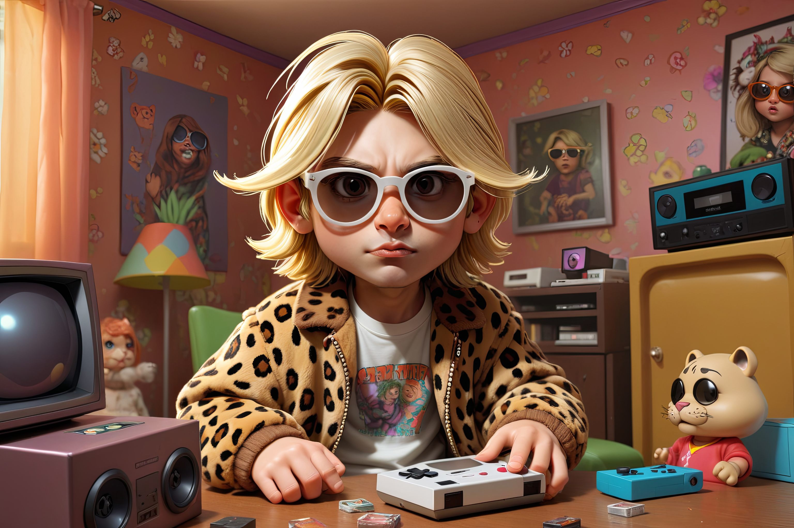
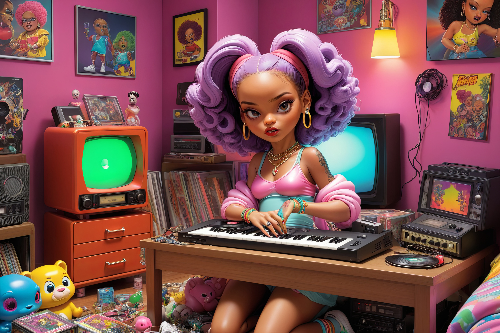
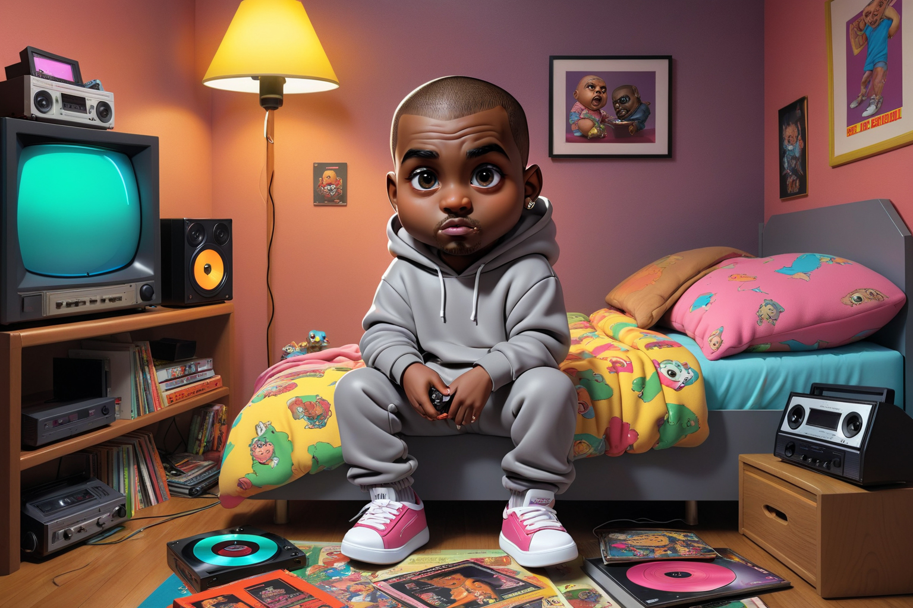
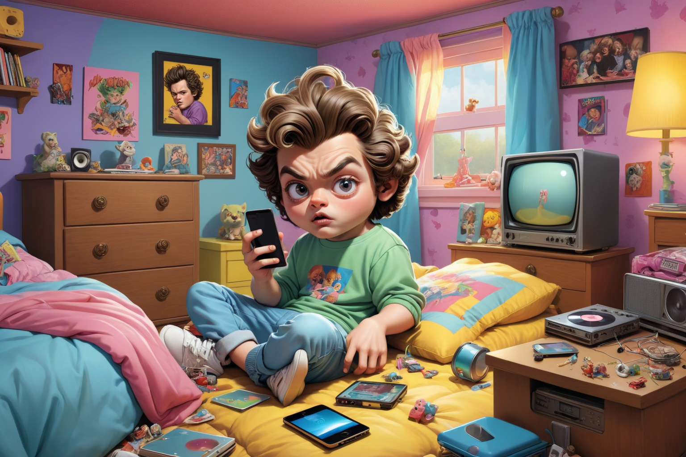
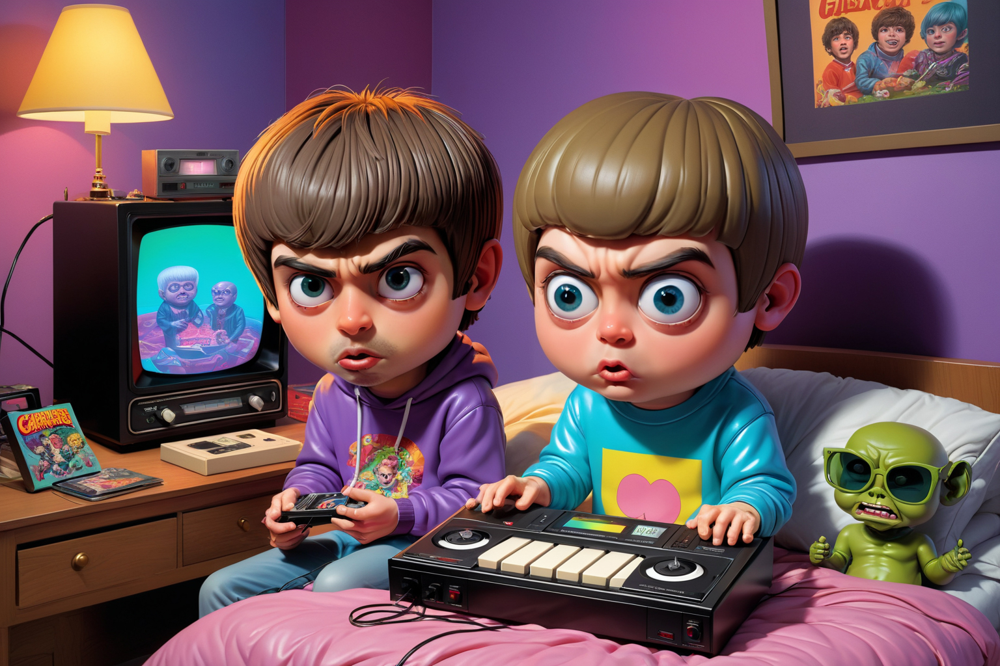